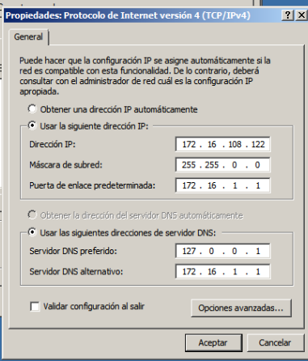

- Módulo: Sistemas Operativos
- Título del trabajo PDC WinServer
- Componentes del grupo: Gregorio Adrián Quintero Álvarez
- Curso Académico: 2013/2014
- Fecha de entrega: 10 de Abril de 2014
En esta práctica vamos a montar un Controlador Primario de Dominio usando un Windows Server 2008. Además es necesario configurar la IP de la máquina virtual estática y el modo de red en adaptador puente.
Para esta práctica es necesario el uso de un Windows 2008 Server Enterprise. Después es necesario que deshabilitemos la estricta política de seguridad que tiene el Windows Server. Ahora configuraremos el host con el DNS1 con el propio de Windows Server (127.0.0.1) y como DNS" el del centro (172.16.1.1)
Ahora necesitaremos instalar el Directorio Activo para ello vamos a inicio -> ejecutar y hay vamos a dcpromo y elegimos el controlador de dominio para un dominio nuevo, después escogemos el dominio en un nuevo bosque y como nombre de dominio elegimos las letras de nuestro apellido + 1W.IDP en mi caso las cuatro primeras del primer apellido y las tres primeras del segundo apellido para que no se repita (QUINALV1W.IDP) y a continuación elegimos el nivel funcional del bosque como Windows Server 2008 R2
A continuación iremos a Inicio -> Herramientas Administrativas -> Usuarios y Equipos de Active Directory después buscamos la carpeta Users y dentro realizamos lo siguiente: - Crear el grupo JEDI con los siguientes usuarios de dominio: "yoda,", "obiwan" y "quigon". - Crear el grupo SITH con los siguientes usuarios de dominio: "emperador", "vader" y "maul".
En esta parte necesitamos 2MV's con Windows 7 enterprise que actuarán de clientes o equipos del dominio. Después le estableceremos de nombre a los equipos de Windows 7 el primer apellido. Como tenemos 2 máquinas con Windows 7 a una le pondremos QuinteroAlv2a y a la otra QuinteroAlv2b. También es muy importante que todos los equipos esten sincronizados en cuanto al reloj y zona horaria. Además el cliente debe tener como DNS1 la IP del PDC y como DNS2 ponemos a FRY (172.16.1.1), ahora añadimos el equipo de cliente al dominio y comprobamos que podemos entrar en los equipos "QuinteroAlv2a" y "QuinteroAlv2b" usando los usuarios del dominio. Después comprobamos en el PDC que aparecen los equipos "QuinteroAlv2a" y "QuinteroAlv2b" usando los usuarios del dominio.
Para esta parte tenemos que crear un carpeta en el disco duro con el nombre de perfiles, la cual estará compartida en la red con los permisos de lectura/escritura para todos los usuarios del dominio. Después modificaremos los permisos de los siguientes usuarios en el atributo perfil. - yoda: \vargas1\perfiles$\%username% - obiwan: \vargas1\perfiles$\%username% - quigon: \vargas1\perfiles$\%username% - emperador: \vargas1\perfiles$\sith - vader: \vargas1\perfiles$\sith - maul: \vargas1\perfiles$\sith Ahora iniciaremos sesión con Quinteroalv2a con los usuarios yoda, obiwan, quigon y emperador y modificaremos el entorno del escritorio y a continuación comprobamos que se han creado las carpetas con los perfiles en el servidor. También tenemos que iniciar sesión con administrador en QuinteroAlv2a para comprobar que tenemos los perfiles para todos. La parte de los perfiles Obligatorios no se puede realizar porque no se ha encontrado la forma de realizarla puesto que daba error.
Modificaremos los permisos de acceso de los usuarios del dominio para que solo puedan acceder a una hora específica. - Los "jedi" sólo pueden acceder de 08:00 a 14:00 - Los "sith" sólo pueden acceder de 14:00 a 20:00